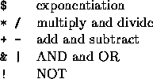

There are three traversal methods commonly used in compilers and calculators:
prefix
infix
postfix
For example, a single expression can be written in each form
infix: a + b * c
prefix: + a * b c
postfix: a b c * +
Note that prefix and postfix ARE NOT mirror images of each other! The advantage of prefix and postfix notations is that parentheses are unnecessary to prevent ambiguity.
In our traversal the following symbols are operators with precedence rules going from highest to lowest:

You are given two strings. The first string is the infix version of the expression. The second string is the prefix version of the expression. Determine the postfix version of the expression and print it out on a single line.
All input will be single characters separated by a space.
Output must be the same, single characters separated by a space. There are no special sentinels identifying the end of the data.
a + b - c + a - b c
INFIX => a + b - c PREFIX => + a - b c POSTFIX => a b c - +